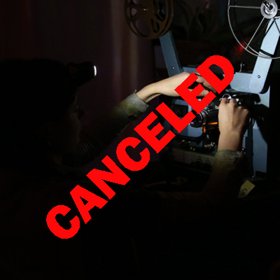

I Touched Myself and I Dissolved
by Esther Fantuzzi & Erro Rasker
I Touched Myself and I Dissolved is a set of analogue projections that combines the practice of live cinema with sound.
On stage, two musicians and a projectionist who, like an archer, operates the projector, a device that acts as a collector of archived, collective dreams, whose forms highlight the language of disappearance, ghosts and empty landscapes and, through scratches, tapes and
grooes, gives consistency to memory. Each scratch on the film, each groove on the tracks, becomes a fragment of a larger narrative, a narrative that unravels through the fabric of time. A performance that by the very nature of the emulsion and the filmic material is destined to
corrode and disappear, towards a principle of decomposition.
Working by intuition, in the fusion of the sound element and the audiovisual material, the performance returns sonic ruptures that, like memory holes and distortions, observe and form the mosaic of a disappearance.
-
Friday, 5th of April, 2024
from 19:00h to 22:00h
@ Rue de l'Hectolitre 3, Reactor
-
Performance consisting of a projectionist, two musicians, a projector and a mixer. It is acombination of live cinema and sound, where visual and sound art are intertwined.
The 35-minute performance takes place in an immersive environment where an analogue 16 mm film projector is loaded with nine tapes forming nine visual loops. During the projection, the loops run off the reel and are manipulated by the projectionist. This
manipulation can take place in several ways, including adjusting the speed, blurring and burning the material itself. The projectionist’s ability to synchronise these visual interven-
tions with the musical performance is crucial to creating an immersive and engaging experience for the audience. The process of visual manipulation is in real time. This requires a thorough knowledge of the projector’s mechanisms, including its gears, lenses and film advance system. In addition, the projectionist must be able to adapt quickly to the demands of the performance and make visual changes in real time to maintain the energy and consistency of the visual experience.
-
PROGRAM
19:00 > door opens
19:30 > performance starts (40')
20:10 > end of programme
21:00 > door closes
-
Bio
Esther Fantuzzi
Esther Fantuzzi is an Italian visual artist whose research stands at the intersection between the use of analogue cinematic tools, writing practices and performance. Esther transforms visual space into a laboratory for collective exploration, considering her artistic practice as a response to the homogenisation of the image and the hyper-production of the film market. Strongly linked to the recovery of pre-existing material as her main tool of investigation, she recomposes films, archive material and uses live projections, around the idea of a traversable and multisensory cinema, which draws new boundaries through development and independent production as an act of resistance. The concept of participatory and interdisciplinary cinema is at the heart of his artistic approach, in which cinema is not only a narrative tool, but becomes a means of drawing new borders.
Erro Rasker
A visual artist, designer, scenographer and writer.
He creates works and installations in-situ, starting often from a pragmatic necessity. His work fulfills a spatial demand - a need for more light, for comfort or warmth.In parallel, his work possesses a second, performative aspect. He sees his work as characters in a space who take an active role in their environment, and in turn change their environment. Their status falls between scenographic ‘prop’ or set piece, and performer, antagonist.
@rask.errrr:
-
https://www.instagram.com/rask.errrr/
-
SEE YOU SOON!!